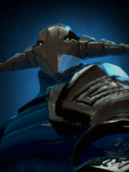
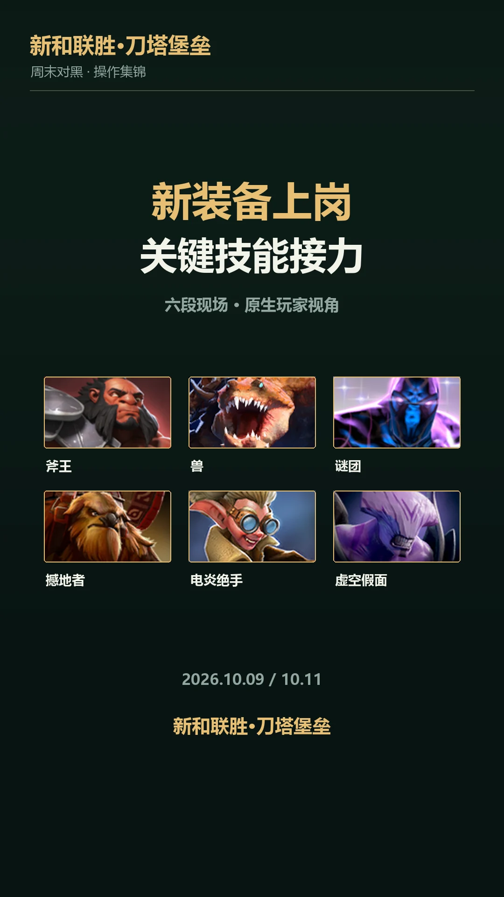
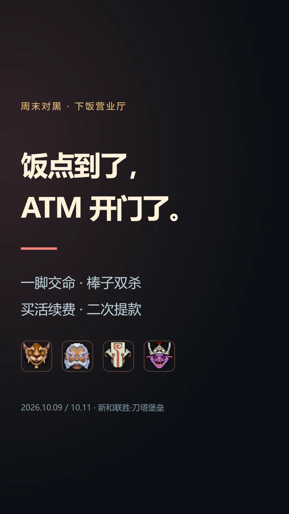

五场对黑 · 同一份热爱BP / 逐人点评 / 战报 MVP
KAPIO / DOTA 2 COMMUNITY
神来一手，值得回看。
一起下饭，也算名场面。
这里，记录我们自己的 Dota 2 故事。
01 / MATCH ARCHIVE

正在打开对黑档案…
记录范围为以上五场对黑。MVP 为本期战报评选。查看完整五局报告 ↗
02 / THE HIGHLIGHTS
视频号「发条酒仙」 · 四条作品

操作集锦 · 视频号观看 ↗01:21跳吼、黑洞、冰甲……关键时刻，谁把团接住了？

下饭现场 · 视频号观看 ↗01:03幽冥守卫收服务费，复活倒计时申请加班。
点击作品前往微信视频号观看。电脑端如出现二维码，用微信扫码即可继续。
03 / THE PEOPLE
18位玩家 · 23个账号 · 10场对黑
段位是名片，战绩是这几把的故事。
天梯段位 × 对黑表现 × 本期代表英雄
18位玩家 · 点击一行，展开各号段位与英雄依据
超凡入圣 3星
本批 10场 · 8胜2负军团赢下单场，20/4/12，每分钟英雄伤害约1030；本批其单场击杀最多的英雄。
血魔赢下单场，9/4/21，建筑伤害14696，GPM722，兼有输出和推进记录。
敌法师赢下单场，7/1/6，汇总KDA13，建筑伤害12377，阵亡仅一次。
本批合计 10场 · 8胜2负。段位来自10月15日的OpenDota返回值，源站可能滞后。
传奇 3星
本批 10场 · 2胜8负斯温使用3次、1胜2负，汇总21/11/16，场均建筑伤害约4240，是本批其使用最多的英雄。
凤凰2次1胜1负，汇总12/19/37，兼看重复使用与助攻记录。
巫医单场虽负，仍有9/11/20及5734治疗；作为本批相对亮点保留，不称胜场。
本批合计 10场 · 2胜8负。段位来自10月15日的OpenDota返回值，源站可能滞后。
4ever4Seven
冠绝一世 · 天梯排名 #4016
本批 8场 · 4胜4负nini.(C=x+y)
超凡入圣 2星
本批 1场 · 1胜0负火女赢下单场，24/4/14，每分钟英雄伤害约1415，建筑伤害6030。
齐天大圣赢下单场，19/3/19，汇总KDA约12.67。
帕格纳赢下单场，9/4/20，建筑伤害8387；来自已合并的小号记录。
本批合计 9场 · 5胜4负。段位来自10月15日的OpenDota返回值，源站可能滞后。
超凡入圣 3星
本批 7场 · 3胜4负传奇 3星
本批 2场 · 1胜1负蓝猫赢下单场，8/3/11，汇总KDA约6.33。
巨魔赢下单场，6/3/16，汇总KDA约7.33。
斯温赢下单场，11/9/19，建筑伤害8919、GPM666，保留推进表现。
本批合计 9场 · 4胜5负。段位来自10月15日的OpenDota返回值，源站可能滞后。 头像暂用本批常用号，待确认大号后更新。
超凡入圣 2星
本批 8场 · 5胜3负小仙女6次4胜2负，占个人8场的75%，是本批最明确的重复使用组合。
钢背兽赢下单场，9/11/27，建筑伤害6759，每分钟英雄伤害约850。
本批合计 8场 · 5胜3负。段位来自10月15日的OpenDota返回值，源站可能滞后。
冠绝一世 · 天梯排名 #539
本批 6场 · 4胜2负冠绝一世 · 天梯排名 #4504
本批 2场 · 1胜1负火女赢下单场，28/3/21，GPM881，每分钟英雄伤害约1569。
蝙蝠赢下单场，13/3/19，汇总KDA约10.67；对应已制作冰魂配合片段的比赛。
干扰者赢下单场，7/5/38，38助攻；以助攻贡献保留代表位。
本批合计 8场 · 5胜3负。段位来自10月15日的OpenDota返回值，源站可能滞后。 头像暂用本批常用号，待确认大号后更新。
万古流芳 3星
本批 4场 · 3胜1负传奇 4星
本批 3场 · 2胜1负獸在两个账号共使用2次，两战全胜，汇总19/11/54，汇总KDA约6.64。
工程师赢下单场，19/7/21，每分钟英雄伤害约1312。
酒仙赢下单场，9/4/13，汇总KDA5.5，保留合并后另一获胜英雄。
本批合计 7场 · 5胜2负。段位来自10月15日的OpenDota返回值，源站可能滞后。
万古流芳 4星
本批 7场 · 4胜3负卡尔4次2胜2负，是本批其使用最多的英雄；保留频次与五五开的战绩。
小黑赢下单场，10/4/16，建筑伤害5637。
米拉娜赢下单场，10/12/25，保留其本批另一获胜英雄的实际参战记录。
本批合计 7场 · 4胜3负。段位来自10月15日的OpenDota返回值，源站可能滞后。
传奇 1星
本批 5场 · 2胜3负巫妖2次1胜1负，汇总4/21/41，优先看重复使用与助攻，不只看击杀。
食人魔2次1胜1负，汇总4/19/22，是其另一重复使用英雄。
本批合计 5场 · 2胜3负。段位来自10月15日的OpenDota返回值，源站可能滞后。
超凡入圣 4星
本批 5场 · 2胜3负斧王2次2胜，汇总41/10/45、KDA8.60；本批其表现明显更好的英雄，未强凑其他名额。
本批合计 5场 · 2胜3负。段位来自10月15日的OpenDota返回值，源站可能滞后。
太恶心了受不了了
冠绝一世 · 天梯排名 #2124
本批 2场 · 1胜1负
旋风冲锋龙卷风
暂无公开段位
本批 2场 · 1胜1负瘟疫法师赢下单场，14/2/12，GPM808、KDA13。
末日使者赢下单场，13/7/15，建筑伤害3083。
本批合计 4场 · 2胜2负。段位来自10月15日的OpenDota返回值，源站可能滞后。
超凡入圣 3星
本批 3场 · 2胜1负寒冬飞龙赢下单场，8/9/29，治疗13172，以助攻与治疗记录入选。
屠夫赢下单场，8/10/17，是其本批另一获胜英雄。
本批合计 3场 · 2胜1负。段位来自10月15日的OpenDota返回值，源站可能滞后。
统帅 4星
本批 3场 · 2胜1负沉默术士赢下单场，7/6/28，汇总KDA约5.83。
屠夫赢下单场，8/10/33，每分钟英雄伤害约864，保留其助攻与输出记录。
本批合计 3场 · 2胜1负。段位来自10月15日的OpenDota返回值，源站可能滞后。
传奇 4星
本批 3场 · 0胜3负本批三场均负；小鱼人单场8/12/8、建筑伤害3355，在其本批英雄中推进数据相对突出。
黑鸟单场5/9/3、每分钟英雄伤害约645；仅表示本批个人相对亮点，不改写败局。
本批合计 3场 · 0胜3负。段位来自10月15日的OpenDota返回值，源站可能滞后。
超凡入圣 2星
本批 3场 · 0胜3负破晓辰星单场7/10/14，每分钟英雄伤害约917、治疗6048，在其本批三场中较突出。
莱恩单场7/7/7，作为本批个人的另一代表记录；该场仍为败局。
本批合计 3场 · 0胜3负。段位来自10月15日的OpenDota返回值，源站可能滞后。
超凡入圣 2星
本批 3场 · 0胜3负夜魔单场13/11/13、每分钟英雄伤害约688，在其本批三场中击杀与输出相对更好。
飞机单场6/15/12、每分钟英雄伤害约594；作为本批相对代表，保留败局事实。
本批合计 3场 · 0胜3负。段位来自10月15日的OpenDota返回值，源站可能滞后。
超凡入圣 1星
本批 2场 · 1胜1负巫妖赢下单场，5/3/21，汇总KDA约8.67。
本批合计 2场 · 1胜1负。段位来自10月15日的OpenDota返回值，源站可能滞后。
统帅 5星
本批 1场 · 1胜0负本批仅一场冰魂，获胜且6/4/25；保留次数1，不将其描述为多场验证。
本批合计 1场 · 1胜0负。段位来自10月15日的OpenDota返回值，源站可能滞后。
还没找到这个称呼，换一个试试。
🔥 本期胜率≥70% · 本期胜率<30% · 英雄角标为本批使用次数。
战绩范围：2026/10/09—10/13，10场对黑；缺席不计败局，单场也可入选本期代表。
段位与头像：10月15日同步自OpenDota公开资料，源站可能滞后；暂无数据不代表无段位。头像优先取登记大号，各号段位全部展示，按头像账号在前排列。豪哥、刘神暂用本批常用号头像，待确认大号。段位徽章与星级素材来自本机Dota2。
04 / MEET YOUR CASTER
“这波操作，咱们慢慢看。”
讲得了关键团，也接得住下饭梗。
高光给掌声，失误留回放。
关键时刻，把声音交还给游戏。
05 / OUR FORTRESS
新和联胜·刀塔堡垒，是我们这群 Dota 2 玩家共同的社团。这里收着对黑的胜负、搭子的配合，还有只有一起打过才懂的笑点。
认真打一局，痛快聊一局。用战报记住过程，用视频留下现场——下一次翻开，还能想起那一波。
从我们的五场对黑开始认识